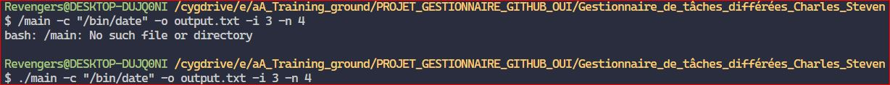
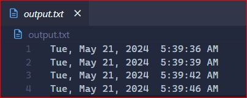
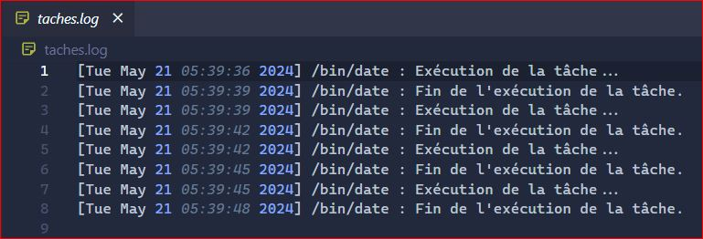

Blog experience
The task was to create blog experience user
- Admin page
- Comment system reply
- Register & Login system
- Comment system reply
- Profile page & system
- Searching system
Project Requirements:
- Implement a login system (Administration):
- Allow new user registration or admin-initiated user creation.
- Manage user roles (e.g., admin and user) with varying page access rights.
- Optionally, use fixtures for role management. Refer to the documentation for more details.
- Create entities with relationships.
- Properly utilize controllers.
- Establish seamless data exchange between the database and controllers.
- Appropriately scale the project's complexity.
- Maintain clean and well-structured code.
- Restrict admin page access to authorized admins only.
- Incorporate other security aspects, as Symfony provides robust security features.
Points for Improvement:
- Include comprehensive comments in the code.
- Create a dedicated folder or document to explain project challenges, solutions, and other relevant details.
Few examples of the pages
used with js
Image 1 of 1



used for the JS